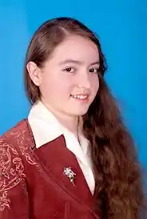

Бурбело Олександра Сергіївна (1.01.1998 – 05.09.2013) – юна письменниця. Народилась у Вінниці в родині викладачів-науковців. Була вихованкою місцевої школи № 26.
Авторка кількох книг поезії і прози українською та російською мовами:
— Первоцвіт: казки, легенди, вірші та загадки; — Белые паруса: сказки, фантастические рассказы, стихотворения; — Первоцвіт: казки, легенди, вірші, смішинки та загадки. Вид. друге, змінене і доповнене; — Зимова Україна: поезії; — Я лиш струна на арфі України; — Золота росинка: поезія, казки. За життя вийшло друком чотири книги автора, решта – посмертні видання. Підготовлені до друку книги поезії та прози "Перемога над синіми водами" та "Гармонія". Незавершеними лишилися роман в стилі фентезі "Тутанхамон" та детектив. Численні публікації в українській та російський періодиці. Лауреат і дипломант понад півсотні літературних конкурсів та фестивалів, знаковими серед яких є перемоги та здобутки у конкурсах "Україна через 20 років" журналу "Крилаті" (Київ, 2010), "Малахітовий носоріг" (Вінниця, 2010), журналів "Хімія для допитливих" та "Географія для допитливих" (Харків, 2011), "Я козацького роду" (Київ, 2011), інтернет-конкурсах ім. Н. С. Гумильова (Санкт-Петербург, 2012), "Волшебное перышко" (Єкатеринбург, 2011, 2012), "Край п’яти січей" (Нікополь, 2012), "Зелене гроно" (Вінниця, 2013) та ін. Творчість високо оцінена відомими українськими письменниками – В. З. Нестайком, В. М. Вітковським, А. М. Подолинним. Автором кількох передмов до книг стала Т. М. Артем’єва. 2 липня 2015 р. була прийнята в Національну Спілку письменників України (посмертно). Квіток № 02965 був виписаний 27 серпня і вручений батькам поетки 5 жовтня у Вінниці під час відкриття IV Міжнародного літературно-мистецького свята "Русалка Дністрова".